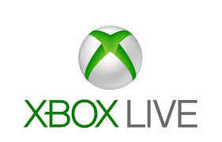
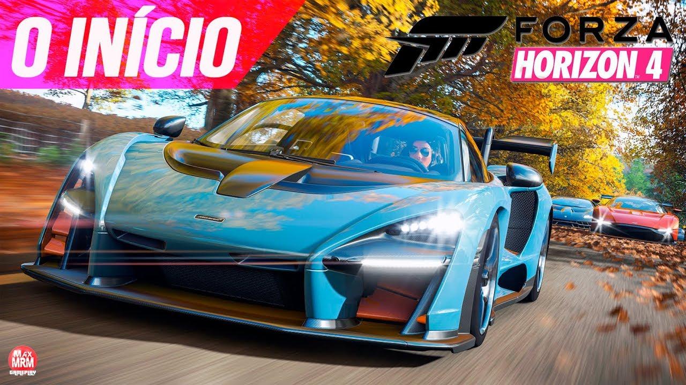
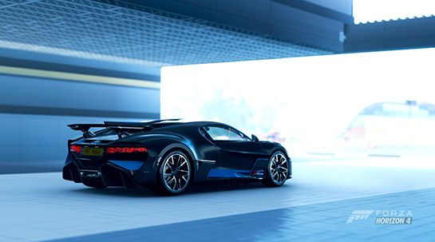

Forza Horizon 4 é um jogo de corrida em mundo aberto desenvolvido pela Playground Games em colaboração com a Turn 10 e publicado pela Xbox Game Studios, que na época do lançamento ainda era conhecida como Microsoft Studios. É o quarto da franquia Forza Horizon e o décimo primeiro da edição Forza. Foi lançado em 02 de outubro de 2018 exclusivamente para Xbox One e Windows 10. Os donos da versão Suprema do jogo tem acesso antecipado de 04 dias. Em 11 de junho de 2018, a Microsoft anunciou que o supercarro esportivo McLaren Senna, que homenageia Ayrton Senna, será capa do jogo.
Forza Horizon 4 foi oficialmente apresentado na conferência do Xbox na E3 2018. Com um mapa fictício do Reino Unido, Forza Horizon 4 é um dos primeiros jogos a apresentar um sistema dinâmico das quatro estações do ano; Verão, Primavera, Outono e Inverno. Cada estação dentro do jogo durará um semana do nosso calendário real, ou seja a cada uma semana a estação é alterada subsequente, caso o jogador entre em modo cooperativo ou multiplayer de outros jogadores, a estação será sincronizada de acordo com o host. Cada estação tem um impacto diferente na jogabilidade. Algumas áreas do jogo serão acessadas apenas no inverno, como por exemplo, os rios e lagos.
A proposta é que no modo online livre, o jogo tenha 72 players em cada servidor, os eventos de corridas continuarão com 12 jogadores apenas. Outra novidade é a opção de compra de propriedades, cada jogador pode ter sua propriedade em diferentes locais do mapa. O jogo também terá mais duas novas expansões em DLC's após o lançamento.
Onde comprar
Imagens


